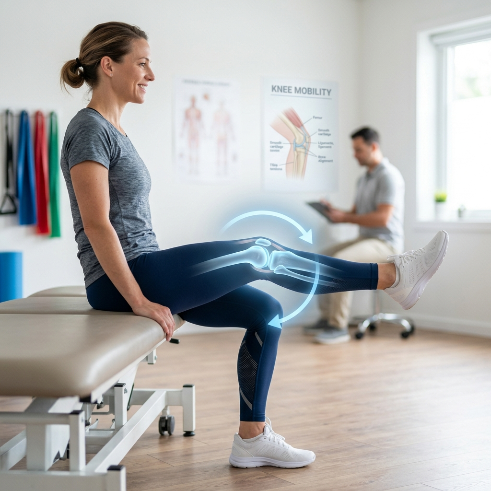

Joint Conservation5 Crucial Habits to Prevent or Delay Knee Replacement
The 1:4 load ratio means every pound of weight lost removes 4 pounds of pressure per step. Learn how low-impact swimming, cycling, and targeted cartilage nutrition shield joint cushions.